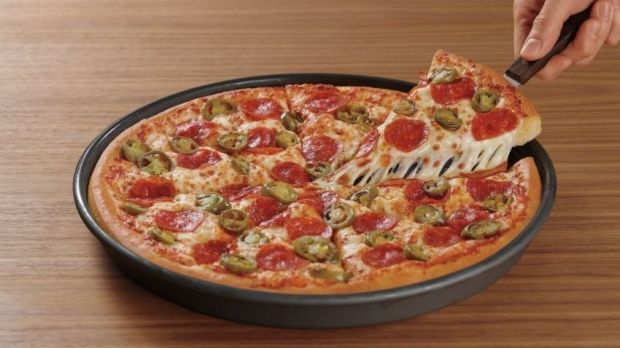
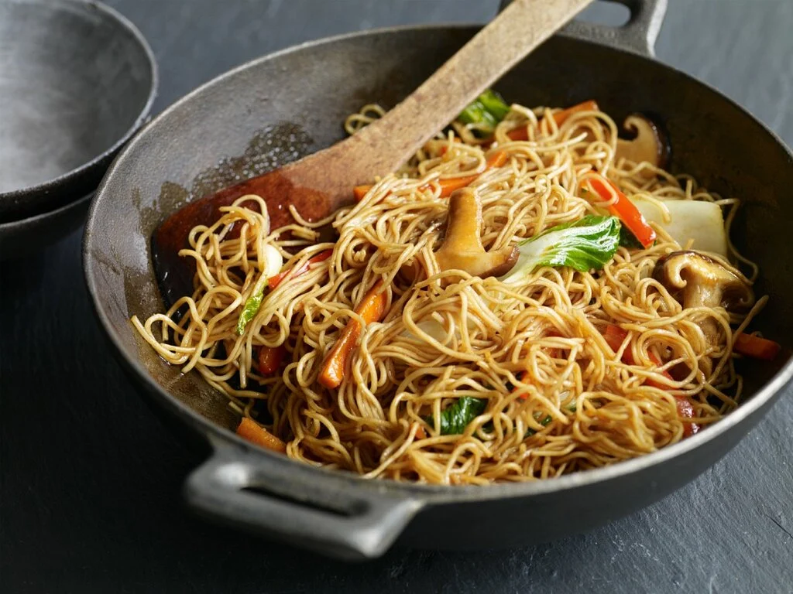

Ich bin von die Klasse 1CHIT
Ich bin jetzt bei der Medientechnik Unterricht
Zu erst habe ich in Sportschule in Klosterneuburg gelernt
Dannach war isch in Politechnische Schule in Tulln geleitet
In TGM möchte ich viel über Computer lernen
Ich möchte auch verschidene Programiersprachen entwickeln
| Meine Lieblingsspeise | ||
| Pizza | Wichtigste: Teig Tomatensouce Käse |
 |
| Asiatische Wok Nudeln | Wichtigste: Nudeln Gemüse Fleisch |
 |